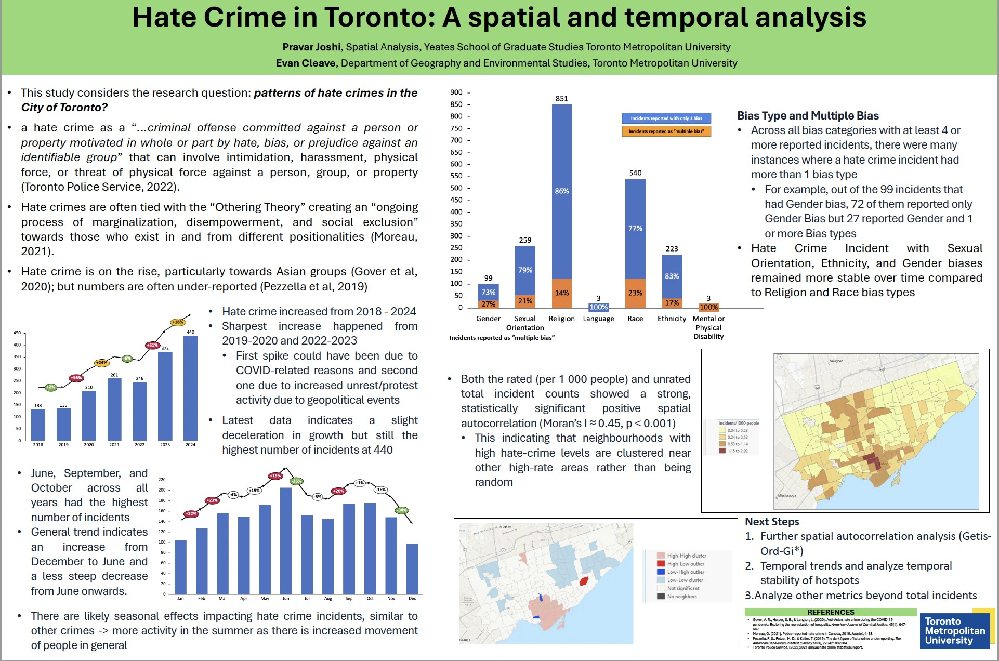
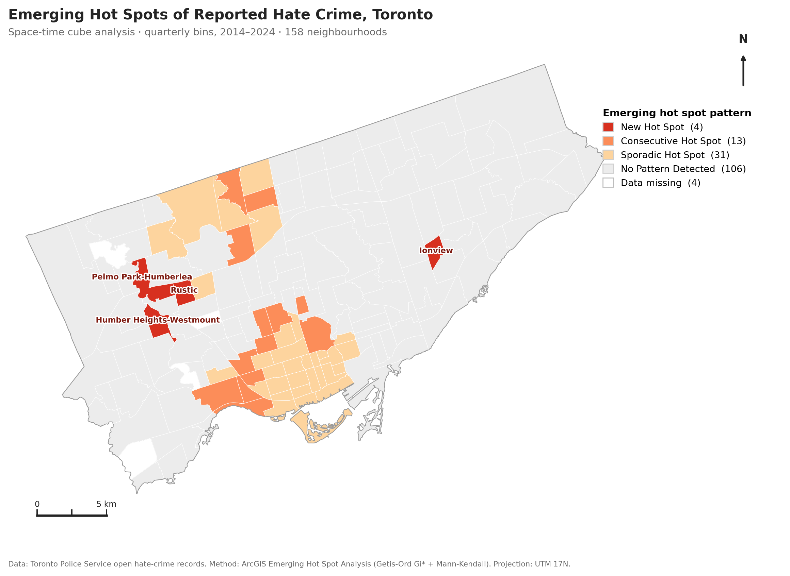
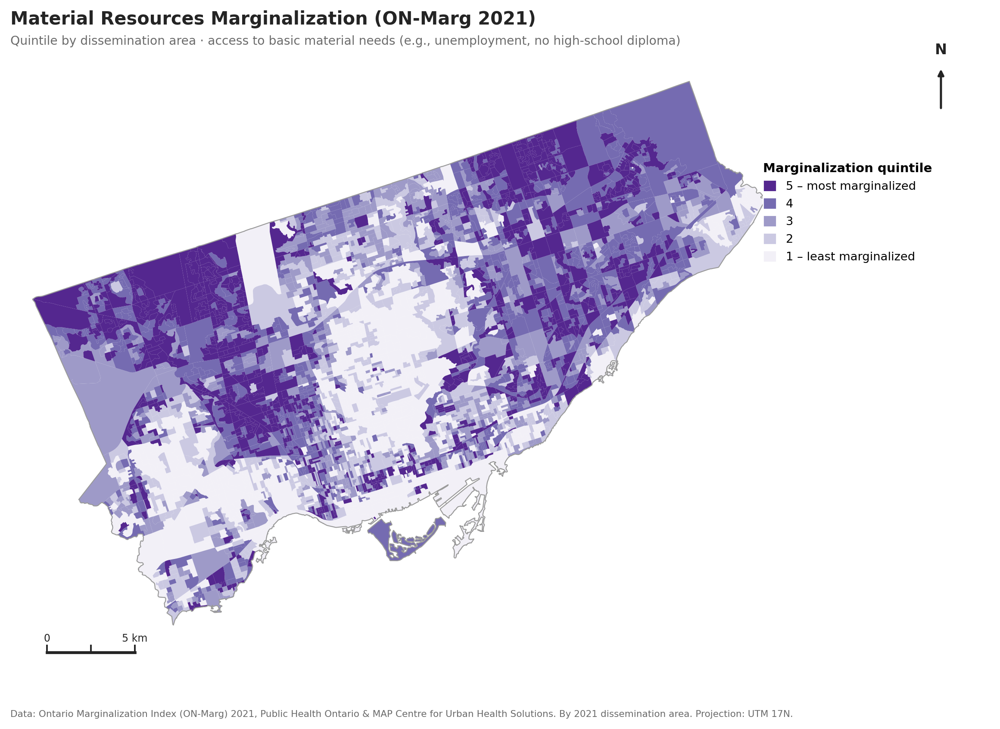
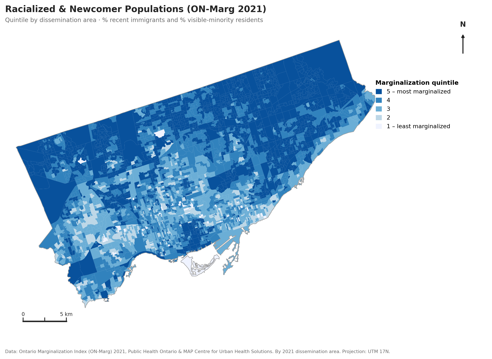

Exploratory Analysis of Open-Source Hate Crime Data (TPS)
Conducted as part of my Research Assistant position at Toronto Metropolitan University with Dr. Evan Cleave. This exploratory analysis of Toronto Police Service open hate-crime data was selected for poster presentation at the Canadian Association of Geographers – Ontario Division (CAGONT).
Conference Poster

Space-Time Cube Analysis
A space-time cube bins events into a three-dimensional structure by creating a grid of locations (neighbourhoods in this analysis) stacked across regular time steps (quarterly bins, 2014 to 2024). This allows both where and when incidents occur to be analysed together. Emerging Hot Spot Analysis then applies a Getis-Ord Gi* hot-spot test in every location and time bin, together with a Mann-Kendall trend test along each neighbourhood's time series. Each neighbourhood is classified by how its clustering behaves over time. A New hot spot is significant only in the most recent period, a Consecutive hot spot shows an unbroken run of recent significant periods, a Sporadic hot spot is significant in some periods but not consistently, and No Pattern indicates no statistically significant clustering.
I applied this approach on the spatio-temporal hate crime data, since it is more informative than a single static hot-spot map. This approach separates places that are newly rising from those that are persistently or only occasionally hot. It distinguishes problems that are emerging, entrenched, or episodic, which affects how and how urgently to respond.
Evaluating Hotspots Over Time in Toronto Neighbourhoods, Compared to ON-Marg
The Ontario Marginalization Index (ON-Marg), developed by Public Health Ontario with the MAP Centre for Urban Health Solutions from the 2021 Census, summarises marginalization across four dimensions. Two are mapped below by dissemination area (more granular than neighbourhoods). Material Resources measures access to and attainment of basic material needs, such as unemployment and not holding a high-school diploma. Racialized & Newcomer Populations measures the share of recent immigrants and residents who identify as a visible minority. Each area is scored in quintiles from 1 (least marginalized) to 5 (most marginalized).



Low reported clustering in marginalized areas. Much of Scarborough in the east and parts of the northwest show no significant hate-crime trend, even though both ON-Marg dimensions run high there (dark shading). This likely reflects a gap in reporting. It supports the case for a mixed-methods study of how aware these communities are of what constitutes a hate crime, their propensity to report it, and the factors driving both, including language barriers, precarious immigration status, and trust in police.
A consecutive belt. The Consecutive hot spots form a near-contiguous belt of west-end neighbourhoods, including South Parkdale, Roncesvalles, High Park-Swansea, Junction-Wallace Emerson, Dufferin Grove, Wychwood, and Humewood-Cedarvale. These neighbourhoods have recorded successive time periods with statistically significant clustering of hate crime, indicating an entrenched pattern that calls for sustained attention.
New hot spots as early warning. The four New hot spots (Rustic, Pelmo Park-Humberlea, Humber Heights-Westmount, and Ionview) give social-service organizations an opportunity to get on the ground early. This would help determine the causes and frictions behind the recent rise and assess what can quell it before it becomes a regular occurrence.
Sporadic downtown clustering. The Sporadic hot spots concentrate in the downtown area. Over a multi-year period, this intermittent pattern may reflect episodic drivers, such as protests due to global events, which cause clustering to appear in some periods but not consistently. Further investigation is needed.
Data: Toronto Police Service open hate-crime records; Ontario Marginalization Index (ON-Marg) 2021, Public Health Ontario & MAP Centre for Urban Health Solutions. Methods: Emerging Hot Spot Analysis (space-time cube: Getis-Ord Gi* with Mann-Kendall trend) and global spatial autocorrelation (Moran's I ≈ 0.45, p < 0.001). Reported incidents only; figures are directional and shaped by reporting behaviour.